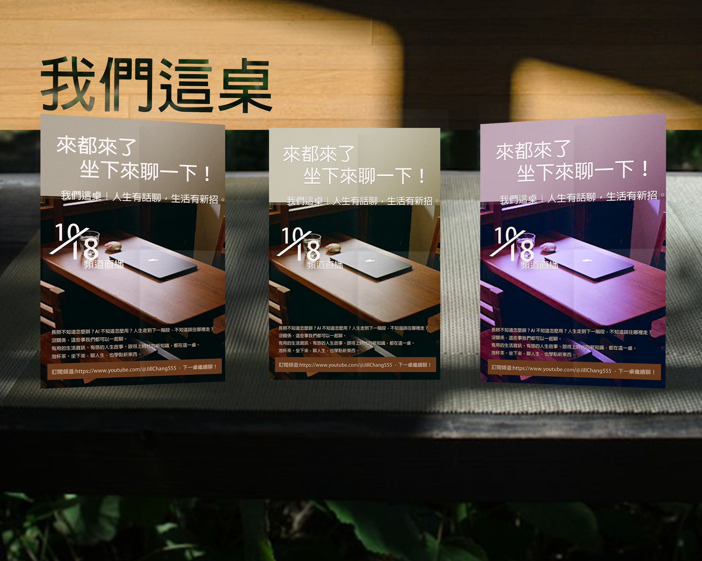
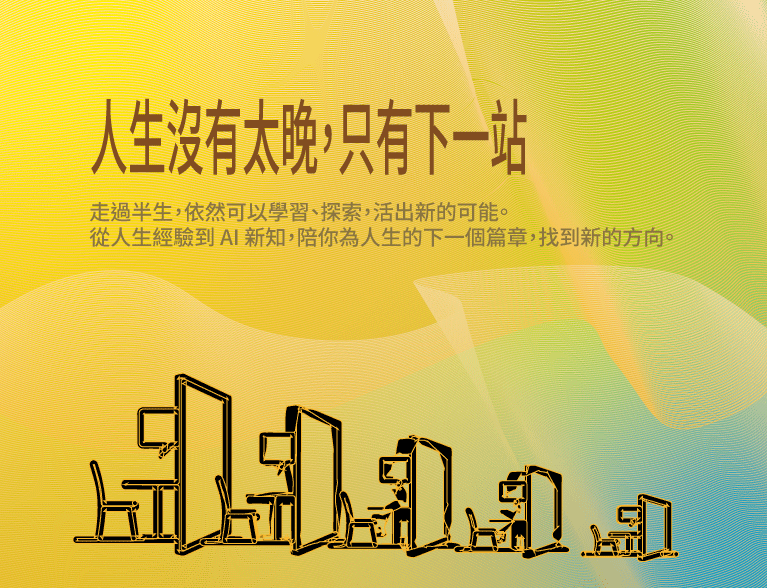

品管/行政人員/影片剪輯師/網頁小編
您的瀏覽器未啟用直接預覽 PDF 功能
Selected Works
使用 Premiere / canva 製作的動態影像剪輯與短片。
使用PS漸層、填滿效果及遮罩片而成
使用PS製作動態圖

使用PS遮色片、鋼筆路徑製作而成的圖在套入模板而成

使用Illustrator向量、漸變工具製作而成
Projects
Contact Information
歡迎透過以下聯絡方式與我取得聯繫，不論是專案合作、工作邀約或交流討論都很歡迎！